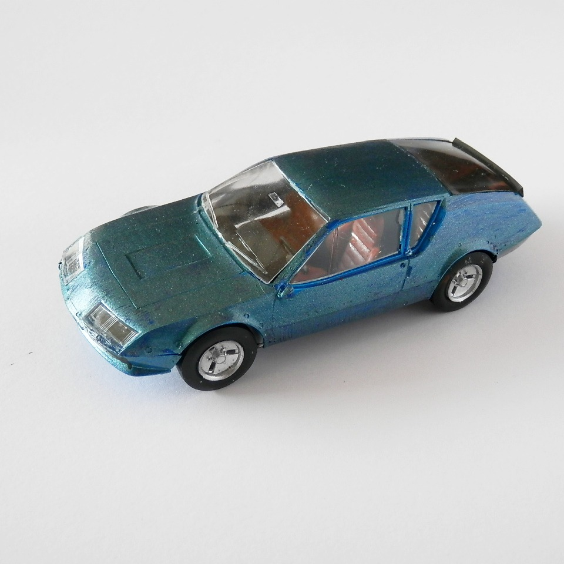
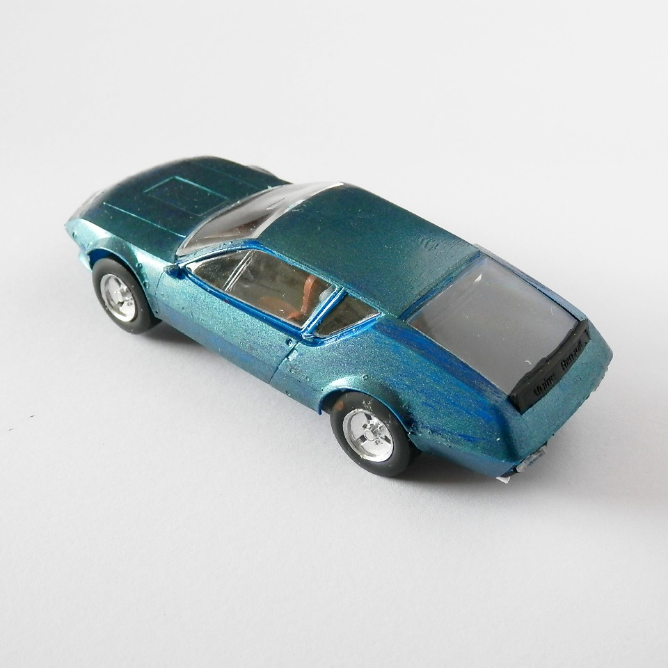

Auto e veicoli stradali · scale model archive
Alpine A310
Alpine A310 — Kit: Revell, Scale: 1/43. Descendant of the legendary A110, rather futuristic styling, much '70s. Tiny model in this scale

Photo gallery

English description
Descendant of the legendary A110, rather futuristic styling, much '70s. Tiny model in this scale
Descrizione italiana
Discendente della leggendaria A110, con una linea piuttosto futuristica e molto anni Settanta. Modello minuscolo in questa scala.